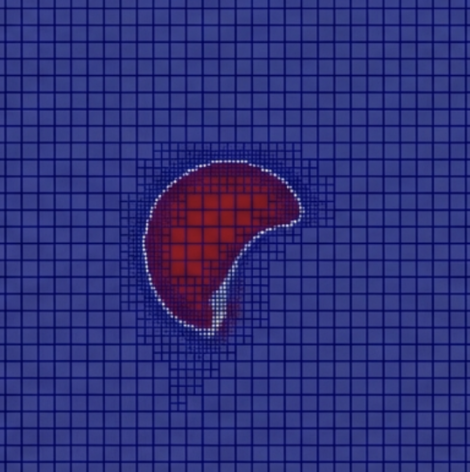
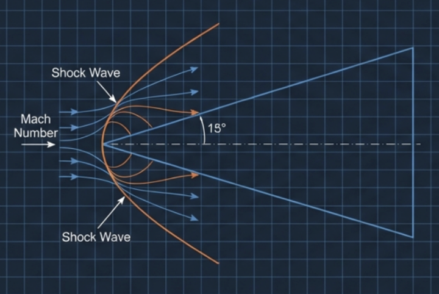
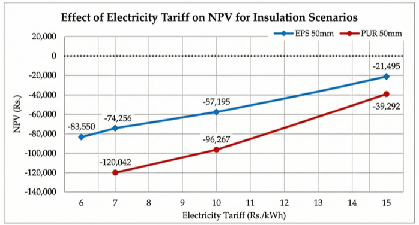
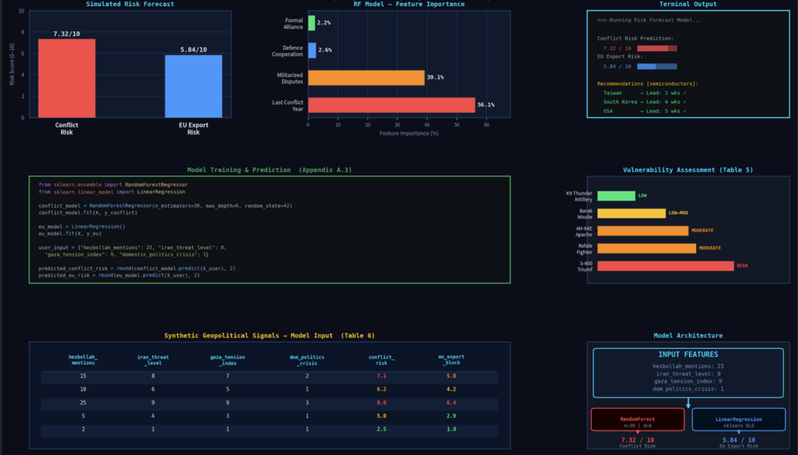
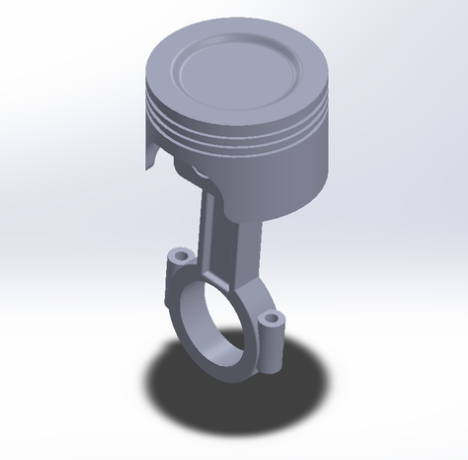
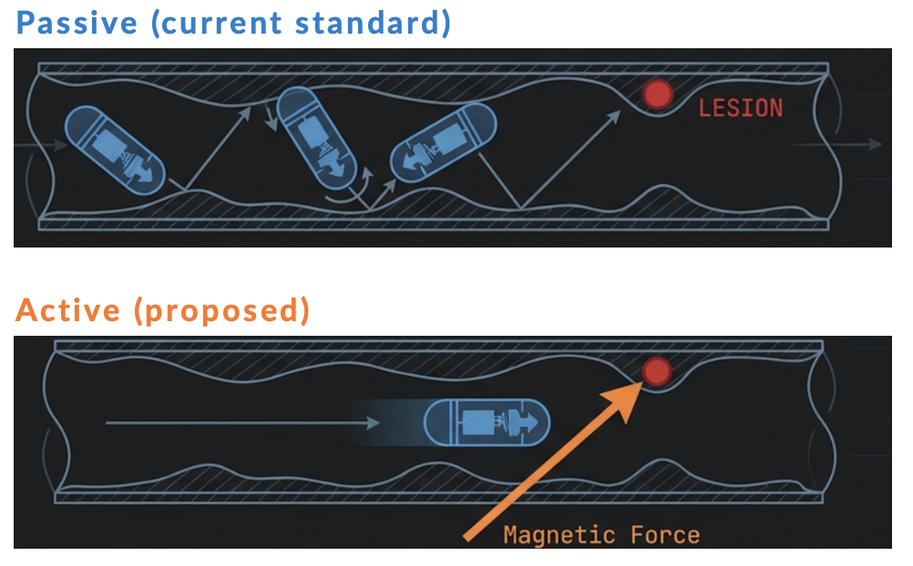
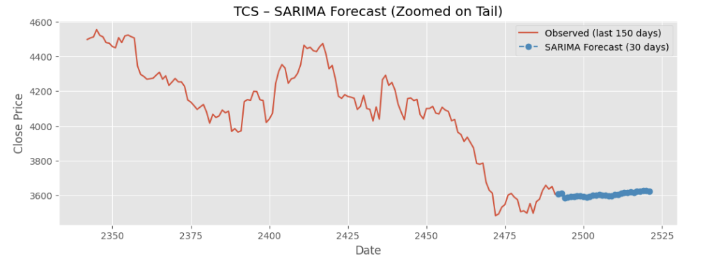
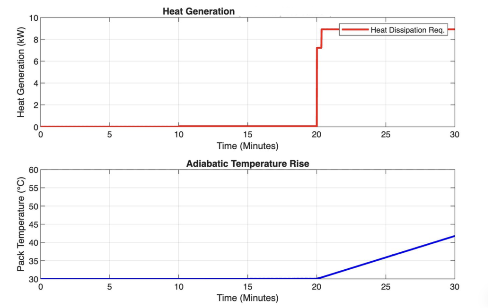
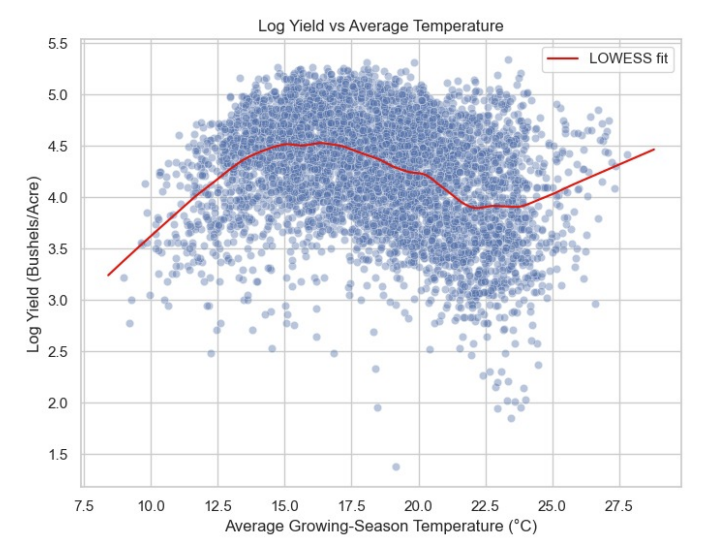

I am a fourth-year Integrated Dual Degree student at BITS Pilani, pursuing an M.Sc. in
Mathematics and a B.E. in Mechanical Engineering. My research sits at the nexus of CFD and coupled physics,
spanning compressible flow, multiphase dynamics, and fluid-structure interaction — working across
analytical, simulation, and numerical methods to produce validated results.
Currently focused on oblique shock-wave interactions and compressible flow phenomena, driven by the
challenge of capturing high-speed flow behaviour with numerical precision. My interests run toward shock
dynamics and high-speed aerodynamics, with a long-term focus on simulation-driven performance engineering —
especially in Formula 1.
Supervised research projects spanning CFD, thermal systems, biomedical devices, and AI-driven engineering
Industry internships and professional roles
Course projects, simulations, and independent builds









Engineering software, programming languages, and domain competencies
Awards, certificates, and academic distinctions
Conference presentations and academic talks
Leadership, community involvement, and personal pursuits
Open to research collaborations, internships, and opportunities in CFD, FSI, multiphase flows and thermofluids